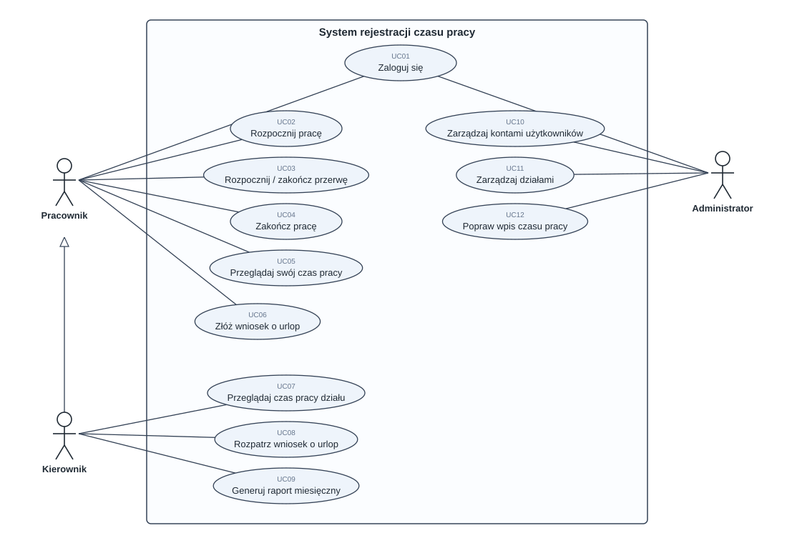
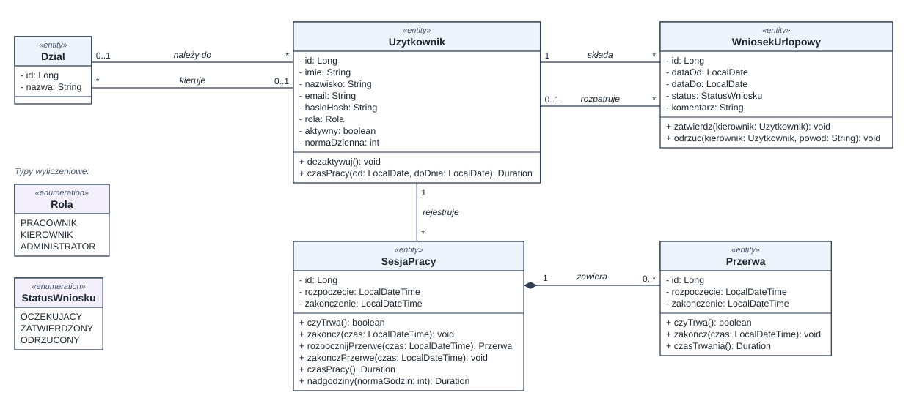
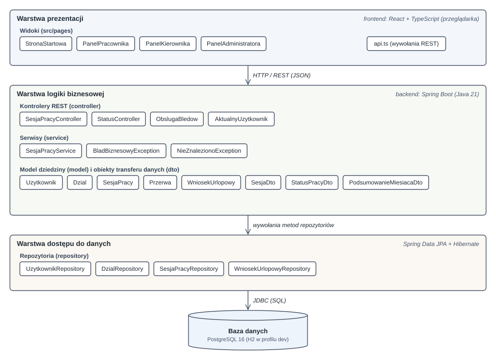
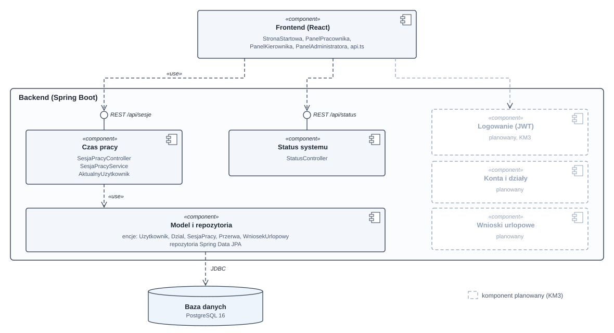
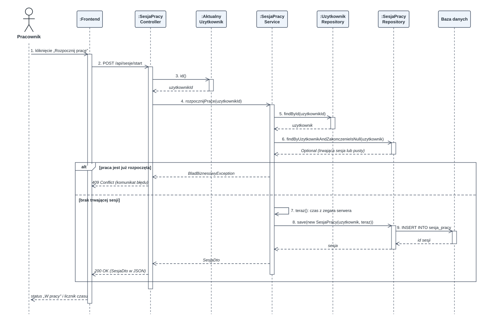
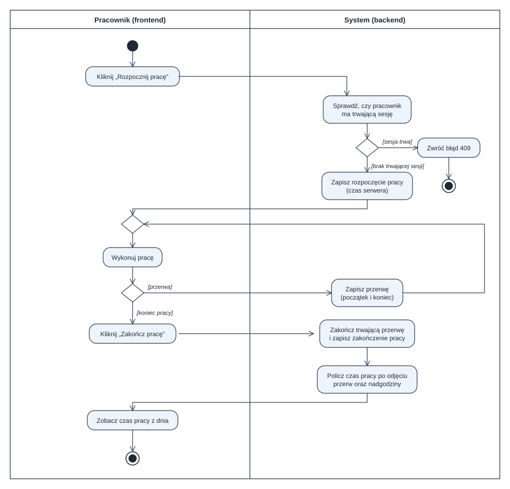

| Politechnika Świętokrzyska | |
| Studia niestacjonarne (semestr zimowy) | |
| Modelowanie i analiza systemów informatycznych | 2026/2027 |
| Projekt, kamień milowy 2 Temat: System rejestracji czasu pracy | |
| Imię i nazwisko: Szymon Dudek Bartosz Fijołek Bartłomiej Łukasiewicz | Grupa: 1IZ22B |
| Dzień oddania: [dd.mm.2026] | |
Tematem projektu jest system rejestracji czasu pracy. Jest to aplikacja internetowa, w której pracownicy zapisują, kiedy zaczęli i skończyli pracę oraz kiedy mieli przerwę. System sam liczy przepracowane godziny i nadgodziny. Kierownik widzi czas pracy swojego działu i może przygotować raport za cały miesiąc.
Celem systemu jest zastąpienie papierowych list obecności i arkuszy w Excelu jedną aplikacją. Pracownik zapisuje czas pracy jednym kliknięciem, a firma ma dokładne dane o przepracowanych godzinach bez ręcznego liczenia.
System obejmuje:
System nie liczy wynagrodzeń i nie obsługuje czytników kart. Zakres systemu nie zmienił się od kamienia milowego 1.
Przyjęto następujące założenia:
Do wykonania systemu użyto:
Pracownik to podstawowy użytkownik systemu. Zapisuje swój czas pracy, przegląda swoje godziny i składa wnioski o urlop.
Kierownik może robić to samo co pracownik, bo sam też zapisuje swój czas pracy. Dlatego na diagramie przypadków użycia dziedziczy po pracowniku. Dodatkowo widzi czas pracy pracowników ze swojego działu, rozpatruje ich wnioski urlopowe i generuje raport miesięczny.
Administrator zakłada konta użytkowników, nadaje im role i tworzy działy. Może też poprawić wpis czasu pracy, na przykład gdy pracownik zapomniał zakończyć pracę.

Diagram przypadków użycia pokazuje, co każdy aktor może zrobić w systemie. Pracownik i administrator najpierw logują się do systemu (UC01). Pracownik rozpoczyna i kończy pracę, robi przerwy, przegląda swój czas pracy i składa wnioski o urlop (UC02 do UC06). Kierownik dziedziczy po pracowniku, więc ma te same możliwości. Dodatkowo przegląda czas pracy swojego działu, rozpatruje wnioski urlopowe i generuje raport miesięczny (UC07 do UC09). Administrator zarządza kontami i działami oraz poprawia błędne wpisy czasu pracy (UC10 do UC12).

Diagram klas przedstawia encje zapisywane w bazie danych. Każda z nich odpowiada jednej klasie w pakiecie pl.psk.czaspracy.model i jednej tabeli w bazie. Względem wstępnego diagramu z kamienia milowego 1 wprowadzono następujące zmiany:

System ma trzy warstwy. Warstwa prezentacji to aplikacja React działająca w przeglądarce. Wysyła ona żądania HTTP do serwera i pokazuje wyniki. Warstwa logiki biznesowej to aplikacja Spring Boot. Kontrolery odbierają żądania, serwisy wykonują logikę, na przykład sprawdzają, czy pracownik nie ma już rozpoczętej pracy, a encje liczą czas pracy i nadgodziny. Warstwa dostępu do danych to repozytoria Spring Data JPA, które zapisują i odczytują dane z bazy PostgreSQL. Każda warstwa korzysta tylko z warstwy znajdującej się bezpośrednio pod nią.

Frontend korzysta z interfejsów REST udostępnianych przez komponenty backendu. Komponent Czas pracy udostępnia adres /api/sesje i korzysta z komponentu Model i repozytoria, który łączy się z bazą danych. Komponent Status systemu pozwala sprawdzić, czy serwer działa. Komponenty narysowane linią przerywaną (logowanie, konta i działy, wnioski urlopowe) są w trakcie realizacji i zostaną dodane do kodu w kolejnym etapie.

Diagram sekwencji pokazuje, co dzieje się po kliknięciu przycisku „Rozpocznij pracę”. Frontend wysyła żądanie POST /api/sesje/start. Kontroler ustala, kto wysłał żądanie, i wywołuje serwis. Serwis pobiera użytkownika i sprawdza, czy ma on trwającą sesję. Jeżeli tak, zwraca błąd, który trafia do przeglądarki jako odpowiedź 409 z komunikatem. Jeżeli nie, serwis pobiera bieżący czas z zegara serwera, tworzy nową sesję pracy i zapisuje ją w bazie. Na końcu frontend dostaje dane sesji i pokazuje status „W pracy”.

Diagram aktywności przedstawia cały dzień pracy. Podzielono go na dwa tory: pracownika i systemu. Po kliknięciu „Rozpocznij pracę” system sprawdza, czy pracownik nie ma już trwającej sesji, i zapisuje rozpoczęcie. Następnie pracownik pracuje i może dowolną liczbę razy zrobić przerwę. Po kliknięciu „Zakończ pracę” system kończy ewentualną trwającą przerwę, zapisuje zakończenie i liczy czas pracy oraz nadgodziny.
Na tym etapie działa szkielet aplikacji oraz rejestracja czasu pracy po stronie serwera. Zrobiono:
Udostępnione adresy REST API:
| Adres | Działanie |
|---|---|
POST /api/sesje/start | rozpoczęcie pracy (UC02) |
POST /api/sesje/przerwa/start | rozpoczęcie przerwy (UC03) |
POST /api/sesje/przerwa/stop | zakończenie przerwy (UC03) |
POST /api/sesje/stop | zakończenie pracy (UC04) |
GET /api/sesje/status | bieżący stan pracownika: poza pracą, w pracy albo na przerwie |
GET /api/sesje/moje | czas pracy i nadgodziny z wybranego miesiąca (UC05) |
GET /api/status | sprawdzenie, czy serwer działa |
W trakcie realizacji są: logowanie przez Spring Security i tokeny JWT, panele pracownika, kierownika i administratora w React oraz zarządzanie kontami i działami. Do czasu dodania logowania serwer rozpoznaje użytkownika po nagłówku X-Uzytkownik-Id. Odpowiada za to jedna klasa AktualnyUzytkownik, więc po dodaniu logowania wystarczy zmienić tylko ją. Wnioski urlopowe i raport CSV zostaną wykonane w kamieniu milowym 3.
Instrukcja uruchomienia znajduje się w pliku README.md w repozytorium. Serwer można uruchomić bez Dockera poleceniem mvnw spring-boot:run -Dspring-boot.run.profiles=dev, a stronę poleceniem npm run dev.
Kod projektu znajduje się we wspólnym repozytorium Git pod adresem https://github.com/DudekSzymon/MASI-Projekt. Każde zadanie jest wykonywane na osobnej gałęzi i trafia do gałęzi głównej przez pull request. Każdy członek zespołu zapisuje zmiany ze swojego konta. Podział prac w zespole: